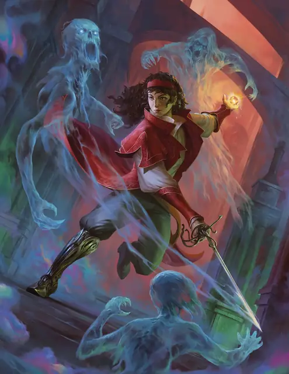

Эсмеральда (Эс) д’Авенир
Ez d’Avenir
Средний Гуманоид (Человек), Хаотичный Добрый, именной НИП

Класс Защиты 14 Инициатива +7 (17)
Хиты 120 (16к8 + 48)
Скорость 30 футов
| мод | спас | ||
|---|---|---|---|
| СИЛ | 14 | +2 | +2 |
| ЛОВ | 19 | +4 | +7 |
| ТЕЛ | 16 | +3 | +3 |
| мод | спас | ||
|---|---|---|---|
| ИНТ | 18 | +4 | +4 |
| МДР | 11 | +0 | +3 |
| ХАР | 17 | +3 | +3 |
Чувства пассивное Восприятие 13
Языки Общий, Эльфийский
Опасность 8 (3 900 опыта; БВ +3)
Действия
Мультиатака. Эсмеральда совершает три атаки Охотничьим клинком или Огненным снарядом в любой комбинации.
Охотничий клинок. Бросок рукопашной атаки: +7, досягаемость 5 фт. Попадание: 8 (1к8 + 4) Колющего урона плюс 11 (2к10) урона Излучением.
Огненный снаряд. Бросок дальнобойной атаки: +7, дистанция 120 фт. Попадание: 19 (3к10 + 3) урона Огнём.
Сотворение заклинаний. Эсмеральда (Эс) д’Авенир сотворяет одно из следующих заклинаний, не нуждаясь в Материальных компонентах (заклинательная характеристика — Интеллект, Сл спасброска заклинаний 15):
Неограниченно: Волшебная рука, Свет
1/день каждое: Магический круг, Молния, Рассеивание добра и зла
Бонусные действия
Укрепление союзников. Эсмеральда выбирает вплоть до шести союзников в пределах 60 футов от себя. Каждая цель, слышащая Эсмеральду, по её выбору получает (А) Преимущество на следующий бросок атаки, совершённый до конца следующего хода цели; или (Б) Сопротивление Некротическому урону и урону Кислотой и Ядом до конца следующего хода цели.
Проклятие Всевидящего Ока (1/день). Эсмеральда выбирает тип урона. Спасбросок Мудрости: Сл 15, одно видимое Эсмеральдой существо в пределах 30 футов от неё. Провал: Цель проклята. Пока проклятие не окончено, цель получает Уязвимость к выбранному типу урона. Проклятие оканчивается преждевременно, если Эсмеральда использует это действие снова. Если до окончания проклятия Хиты цели опускаются до 0, Эсмеральда в последующем ходу может Бонусным действием перенести проклятие на новое существо.
Воодушевляющий клич. Эсмеральда выбирает вплоть до шести союзников в пределах 60 футов от себя. Каждая цель, слышащая Эсмеральду, может Реакцией переместиться на расстояние вплоть до своей Скорости, не Провоцируя атак.
Реакции
Щит (3/день). Эсмеральда сотворяет Щит в ответ на условие этого заклинания (заклинательная характеристика — та же, что для Сотворения заклинаний).
Бонус мастерства +3
Эсмеральда д’Авенир
Странствующая охотница на чудовищ
Впервые Эсмеральда, или Эс, д’Авенир столкнулась с чудовищами в собственной семье — с расчётливыми Раданавичами, которые выдавали себя за вистани, чтобы грабить путников. Среди их гнусных дел было и похищение Эразма ван Рихтена, сына Рудольфа ван Рихтена. Мальчика продали, и он погиб от рук вампира барона Метуса. За то недолгое время, что Эс знала Эразма, юноша с нежностью говорил о совсем иной семье, нежели та, которую знала она. Когда отец Эразма выследил Раданавичей и предал мать семейства правосудию, Эс не стала останавливать решительного доктора.
В последующие годы Эс прибилась к настоящему табору вистани и взяла себе фамилию д’Авенир. Она скиталась по свету, но так и не нашла того чувства родства, о котором рассказывал Эразм. Она разыскала Рудольфа ван Рихтена и после настороженного знакомства стала учиться у доктора. В тот же период она вновь встретилась с Эразмом — теперь уже призраком. От ван Рихтенов она получила бесценные уроки, но в конце концов покинула их дом, чтобы идти своим путём.
Умелое истребление чудовищ и отвага перед лицом сверхъестественных опасностей принесли Эс репутацию народной героини и известной странницы Туманов. Приключения дорого ей обошлись — она потеряла ценные вещи, близких спутников и собственную ногу ниже колена, — но всё же Эс неустанно искореняет зло и защищает невинных. Вооружённая мудростью наставника, поддержкой ушедшего друга и надеждой, выкованной в глубине сердца, она мечтает однажды создать место, которое покажется ей достаточно безопасным, чтобы назвать его домом.
Охотится ли она на монстров, или расследует тайны, — Эз всюду приносит с собой музыку вистани. В её памяти хранится обширное собрание песен со всех уголков Туманных земель, и она с радостью исполняет их для каждого, кто путешествует вместе с ней.